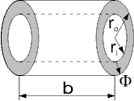

Please have a look at Reluctance forces in the Users Guide for an explanation of the different flux tube categories and resulting sub-packages.
Due to the restrictions on reluctance force calculation outlined there, flux tube elements with a possibly nonlinear material characteristic my_r(B) must have a fixed shape during simulation of actuator motion. Hence, the dimensions of these flux tubes are defined as parameters in the model components that extend the base class PartialFixedShape.
For initial design of magnetic circuits, the relative permeability of possibly nonlinear flux tube elements can easily be set to a constant value my_rConst (nonLinearPermeability set to false). In some cases, this can simplify the rough geometric design of a device's magnetic circuit. Once an initial geometry is found, the magnetic subsystem can be simulated and fine-tuned with more realistic non-linear characteristics of ferromagnetic materials. Doing so requires setting of the parameter nonLinearPermeability to true and selection of one of the soft magnetic materials of Material.SoftMagnetic.
| Name | Description |
|---|---|
| Base class for flux tubes with fixed shape during simulation; linear or nonlinear material characteristics | |
| (Hollow) cylinder with axial flux; fixed shape; linear or nonlinear material characteristics | |
| Hollow cylinder with radial flux; fixed shape; linear or nonlinear material characteristics | |
| Flux tube with rectangular cross-section; fixed shape; linear or nonlinear material characteristics |
Please refer to the description of the enclosing sub-package FixedShape for a description of all elements of this package.
| Type | Name | Default | Description |
|---|---|---|---|
| Material | |||
| Boolean | nonLinearPermeability | true | = true, if non-linear rel. permeability is used, otherwise constant rel. permeability |
| RelativePermeability | my_rConst | 1 | Constant relative permeability; used if nonLinearPermeability = false [1] |
| Type | Name | Description |
|---|---|---|
| PositiveMagneticPort | p | Positive magnetic port |
| NegativeMagneticPort | n | Negative magnetic port |
partial model PartialFixedShape
"Base class for flux tubes with fixed shape during simulation; linear or nonlinear material characteristics"
extends Modelica_Magnetic.Interfaces.TwoPortComponent;
parameter Boolean nonLinearPermeability = true
"= true, if non-linear rel. permeability is used, otherwise constant rel. permeability";
parameter SI.RelativePermeability my_rConst = 1
"Constant relative permeability; used if nonLinearPermeability = false";
replaceable record Material =
Modelica_Magnetic.Material.SoftMagnetic.ApproximationData
"Ferromagnetic material characteristics; used if nonLinearPermeability = true";
Material mat;
SI.Reluctance R_m "Magnetic reluctance";
SI.Permeance G_m "Magnetic permeance";
SI.MagneticFluxDensity B "Magnetic flux density";
SI.CrossSection A "Cross-sectional area penetrated by magnetic flux";
SI.RelativePermeability my_r "Relative magnetic permeability";
equation
my_r = if nonLinearPermeability then
Modelica_Magnetic.Material.SoftMagnetic.my_rApprox(
B,
mat.my_i,
mat.B_myMax,
mat.c_a,
mat.c_b,
mat.n) else my_rConst;
R_m = 1/G_m;
V_mag = Phi * R_m;
B = Phi/A;
end PartialFixedShape;
Please refer to the description of the enclosing sub-package FixedShape for a description of all elements of this package.
Set the inner radius r_i=0 for modelling of a solid cylindric flux tube.
| Type | Name | Default | Description |
|---|---|---|---|
| Material | |||
| Boolean | nonLinearPermeability | true | = true, if non-linear rel. permeability is used, otherwise constant rel. permeability |
| RelativePermeability | my_rConst | 1 | Constant relative permeability; used if nonLinearPermeability = false [1] |
| replaceable record Material | ApproximationData | Ferromagnetic material characteristics; used if nonLinearPermeability = true | |
| Fixed geometry | |||
| Length | l | 0.01 | Axial length (in direction of flux) [m] |
| Radius | r_i | 0 | Inner radius of hollow cylinder (zero for cylinder) [m] |
| Radius | r_o | 0.01 | Outer radius of (hollow) cylinder [m] |
 | |||
| Type | Name | Description |
|---|---|---|
| PositiveMagneticPort | p | Positive magnetic port |
| NegativeMagneticPort | n | Negative magnetic port |
model HollowCylinderAxialFlux
"(Hollow) cylinder with axial flux; fixed shape; linear or nonlinear material characteristics"
extends Modelica_Magnetic.FluxTube.FixedShape.PartialFixedShape;
parameter SI.Length l = 0.01 "Axial length (in direction of flux)";
parameter SI.Radius r_i = 0
"Inner radius of hollow cylinder (zero for cylinder)";
parameter SI.Radius r_o = 0.01 "Outer radius of (hollow) cylinder";
equation
A = pi*(r_o^2 - r_i^2);
G_m = (my_0 * my_r * A)/ l;
end HollowCylinderAxialFlux;
Please refer to the description of the enclosing sub-package FixedShape for a description of all elements of this package.
For hollow cylindric flux tubes with a radial magnetic flux, the flux density is a function of the radius. For that reason, the characteristic my_r(B) is evaluated for the flux density at the flux tube's mean radius.
For those flux tube sections of a magnetic device that have a nonlinear material characteristic my_r(B) and a large aspect ratio of outer to inner radius r_o/r_i, the section can be split up in a series connection of several hollow cylindric flux tubes with radial flux. This allows for more realistic modelling of the dependence of flux density on the radius compared to modelling with just one flux tube element.
| Type | Name | Default | Description |
|---|---|---|---|
| Material | |||
| Boolean | nonLinearPermeability | true | = true, if non-linear rel. permeability is used, otherwise constant rel. permeability |
| RelativePermeability | my_rConst | 1 | Constant relative permeability; used if nonLinearPermeability = false [1] |
| replaceable record Material | ApproximationData | Ferromagnetic material characteristics; used if nonLinearPermeability = true | |
| Fixed geometry | |||
| Breadth | b | 0.01 | Breadth (orthogonal to flux direction) [m] |
| Radius | r_i | 0.01 | Inner radius of hollow cylinder [m] |
| Radius | r_o | 0.02 | Outer radius of hollow cylinder [m] |
|  | |||
| Type | Name | Description |
|---|---|---|
| PositiveMagneticPort | p | Positive magnetic port |
| NegativeMagneticPort | n | Negative magnetic port |
model HollowCylinderRadialFlux "Hollow cylinder with radial flux; fixed shape; linear or nonlinear material characteristics" extends Modelica_Magnetic.FluxTube.FixedShape.PartialFixedShape; parameter SI.Breadth b = 0.01 "Breadth (orthogonal to flux direction)"; parameter SI.Radius r_i = 0.01 "Inner radius of hollow cylinder"; parameter SI.Radius r_o = 0.02 "Outer radius of hollow cylinder"; equation A = b * pi*(r_o + r_i); //Area at arithmetic mean radius for calculation of average flux density G_m = 2* pi* my_0* my_r* b/ Modelica.Math.log(r_o/r_i); end HollowCylinderRadialFlux;
Please refer to the description of the enclosing sub-package FixedShape for a description of all elements of this package.
| Type | Name | Default | Description |
|---|---|---|---|
| Material | |||
| Boolean | nonLinearPermeability | true | = true, if non-linear rel. permeability is used, otherwise constant rel. permeability |
| RelativePermeability | my_rConst | 1 | Constant relative permeability; used if nonLinearPermeability = false [1] |
| replaceable record Material | ApproximationData | Ferromagnetic material characteristics; used if nonLinearPermeability = true | |
| Fixed geometry | |||
| Length | l | 0.01 | Length in direction of flux [m] |
| Breadth | a | 0.01 | Breadth of rectangular cross-section [m] |
| Height | b | 0.01 | Height of rectangular cross-section [m] |
 | |||
| Type | Name | Description |
|---|---|---|
| PositiveMagneticPort | p | Positive magnetic port |
| NegativeMagneticPort | n | Negative magnetic port |
model Cuboid "Flux tube with rectangular cross-section; fixed shape; linear or nonlinear material characteristics" extends Modelica_Magnetic.FluxTube.FixedShape.PartialFixedShape; parameter SI.Length l = 0.01 "Length in direction of flux"; parameter SI.Breadth a = 0.01 "Breadth of rectangular cross-section"; parameter SI.Height b = 0.01 "Height of rectangular cross-section"; equation A = a * b; G_m = (my_0 * my_r * A)/ l; end Cuboid;
 Modelica_Magnetic.FluxTube.FixedShape.PartialFixedShape.Material
Modelica_Magnetic.FluxTube.FixedShape.PartialFixedShape.Material
| Type | Name | Default | Description |
|---|---|---|---|
| RelativePermeability | my_i | 1 | Initial relative permeability at B=0 [1] |
| MagneticFluxDensity | B_myMax | 1 | Flux density at maximum relative permeability [T] |
| Real | c_a | 1 | Coefficient of approximation function |
| Real | c_b | 1 | Coefficient of approximation function |
| Real | n | 1 | Exponent of approximation function |
replaceable record Material = Modelica_Magnetic.Material.SoftMagnetic.ApproximationData "Ferromagnetic material characteristics; used if nonLinearPermeability = true";